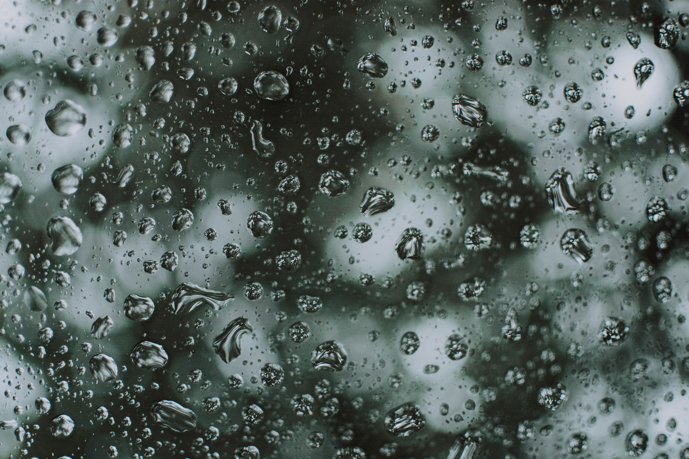

거긴 날씨가 어때. 나의 하늘과 밤엔 자꾸 떠오르는 기억이 계속 내게 말을 건네네. 우리는 함께일 때. 참 많이도 웃었네. 지금 나는 무표정을 해. 너가 없이 무슨 말을 해.
why 도대체 왜 어떤 걸로도 대신할 수 없는 말로는 설명할 수 없는 무슨 기분일까. 무슨 마음일까. 내게 왜 그래 나는 왜 이래.보고싶어. 너가 보고싶어서 내가 이래. 나는 이래. 보고싶어. 이렇게 보고 싶으면 그건 사랑이래. 이건 사랑이네. 나는 매일 네 생각을 해. 그걸 멈추는게 잘 안돼.
ow can I love you. oh yeah -
이제 나는 네게 말을 해. 나의 맘이 흘러 넘치게. how much I love you. I'll never let you down. 